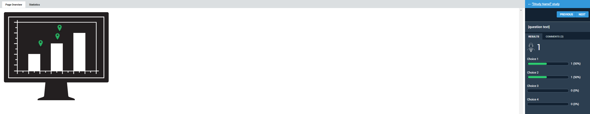
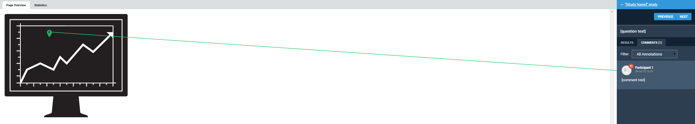
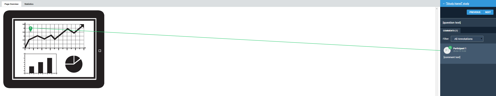
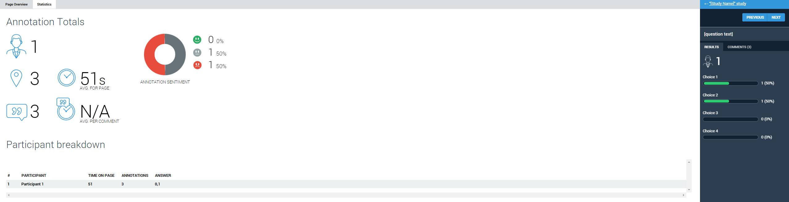
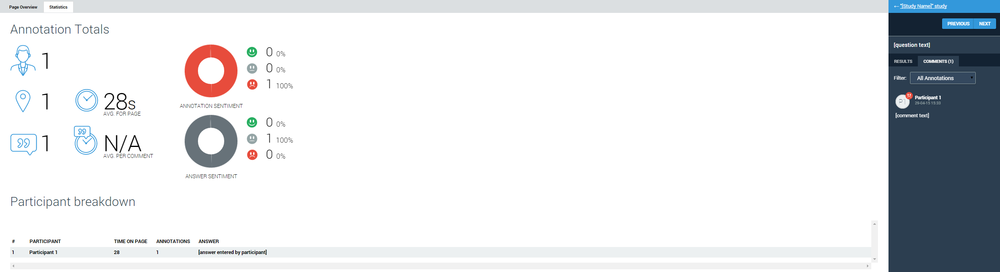
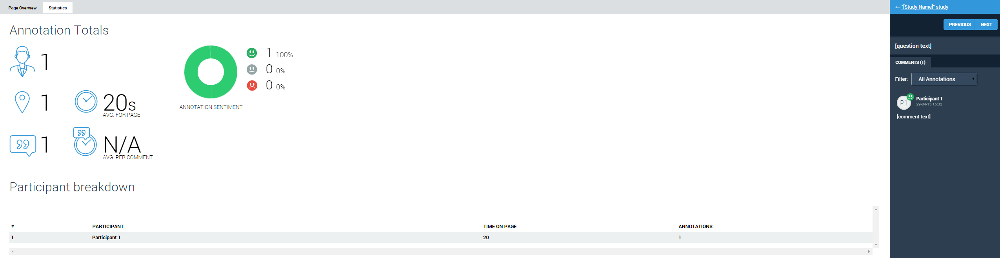

You can view the responses to and statistics about questions in studies by clicking the thumbnail image for questions on the Tasks and Questions page. The Page Overview tab is displayed by default. You can click the Statistics tab to display statistics about the question.
Fig. 5.4.3.4.1 Overview of Response to Individual Multiple-Choice Questions

Fig. 5.4.3.4.2 Overview of Response to Individual Free-Text Form Questions

Fig. 5.4.3.4.3 Overview of Responses to Individual Annotation-Based Questions

|
Question Type |
Page Overview tab |
|---|---|
|
Multiple-Choice Questions |
The Results tab in the right-hand panel, displays the percentages of responses participants selected for each choice. The Comments tab in the right-hand panel, displays the comments entered about this question. If you click a comment, a line connecting the comment to the Annotation icon in which it was entered is displayed. In the Comments tab, you can filter the comments entered by sentiment. |
|
Free-Text Form Questions |
The Results tab in the right-hand panel, displays the percentages of responses
particiapants selected for each choice. The Comments tab in the right-hand panel, displays the comments entered about this question. If you click a comment, a line connecting the comment to the Annotation icon in which it was entered is displayed. In the Comments tab, you can filter the comments entered by sentiment. |
|
Annotation-Based Questions |
The Comments tab in the right-hand panel, displays the comments entered about this question. If you click a comment, a line connecting the comment to the Annotation icon in which it was entered is displayed. In the Comments tab, you can filter the comments entered by sentiment. |
Fig. 5.4.3.4.4 Statistics about Responses to Individual Multiple-Choice Questions

Fig. 5.4.3.4.5 Statistics about Responses to Individual Free-Text Form Questions

Fig. 5.4.3.4.6 Statistics about Responses to Individual Annotation-Based Questions

|
Icon |
Description |
|---|---|
|
Number of participants who answered the question |
|
|
Average amount of time participants displayed the question |
|
|
Number of annotation icons dropped on the page in this question |
|
|
Number of comments entered about this question |
|
|
% of sentiments about this question that were positive |
|
|
% of sentiments about this question that were neutral |
|
|
% of sentiments about this question that were negative |
|
Colum |
Description |
|---|---|
|
PARTICIPANT |
Specifies the participants name, if the participants has not selected the I want to be kept anonymous check box on the study. |
|
TIME ON PAGE |
Specifes the amount of time the paticipants spent on the page. |
|
ANNOTATIONS |
Specifies the number of annotations that participant dropped on the page. |